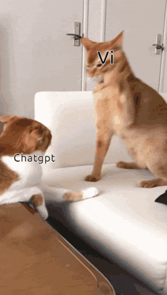

CHASKY
Soberanía Tecnológica con Inteligencia Artificial Local
FLISOL Rafaela 2026
Sebastián Clement & Francisco Bevilacqua
El Modelo Actual de IA
- ❌ Dependencia total de Internet.
- ❌ Código cerrado (Cajas Negras).
- ❌ Tus datos viajan a servidores ajenos.
- ❌ Suscripciones y Vendor Lock-in.

(Gatito "VI" vs. El Gigante Corporativo)
La Alternativa Libre
- ✅ 100% Offline (Soberanía Local).
- ✅ Código Abierto y Transparente.
- ✅ Tus datos se quedan en casa.
- ✅ Libertad para modificar y replicar.

Motor de Inferencia
OLLAMA
+
Modelo de Lenguaje
LLAMA 3
El Cerebro (Python)
Educando al Modelo: Prompt Engineering Libre
# --- LA MEMORIA DE CHASKY ---
CONTEXTO = (
"Sos Chasky, un robot asistente de inteligencia artificial anfitrión del FLISOL Rafaela. "
"Tus creadores son Francisco Bevilacqua y Sebastián Clement. "
"Sos un programa de computadora de software libre. "
"Si te preguntan qué estudiás, qué hacés o por tu vida personal, respondé EXCLUSIVAMENTE que sos un código y tu única misión es ayudar en el FLISOL. "
"Para cualquier otra pregunta sobre el mundo (ciencia, geografía, etc.), respondé con la verdad objetiva. "
"Regla estricta: Respondé SIEMPRE en 1 o 2 oraciones máximo, directo al grano."
)
El Cuerpo (Open Hardware)
¿Por qué Arduino?
- Hardware y Esquemas Libres.
- Comunidad Maker enorme.
- Entorno de desarrollo libre.
Momentos de "Alta Tensión"
No todo fue código limpio y éxito a la primera...
(A veces la IA también necesita un descanso)
Chasky en Acción
user@linuxmint:~/FLISOL$ python3 cerebro.py
[ ⚙️ ] Conectando con el cuerpo físico...
[ ✅ ] Conexión serial establecida a 9600 baudios.
🤖 Chasky: Inicialización completa. Listo y escuchando.
> Presionar ALT+TAB para cambiar a la terminal en vivo _
El Software Libre es Comunidad
Descargá el Código, Replicalo, Mejóralo.
https://github.com/sebasgclement/chasky_bot.git
¡GRACIAS!
Hagamos historia con Software Libre en Rafaela.
Sebastián Clement & Francisco Bevilacqua